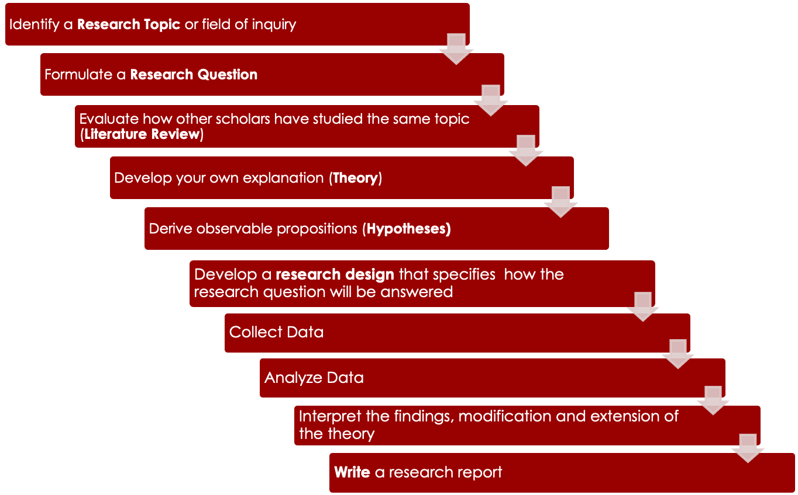
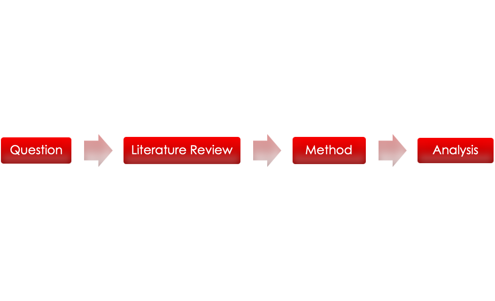
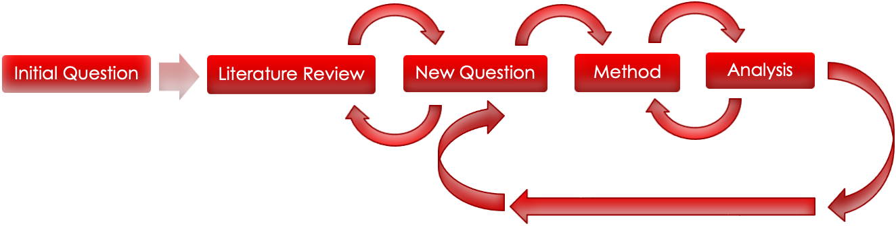

<!DOCTYPE html>
<html lang="en">
  <head>
    <meta charset="utf-8" />
    <meta name="viewport" content="width=device-width, initial-scale=1.0, maximum-scale=1.0, user-scalable=no" />

    <title></title>
    <link rel="stylesheet" href="dist/reveal.css" />
    <link rel="stylesheet" href="css/stefano.css" id="theme" />
    <link rel="stylesheet" href="plugin/highlight/zenburn.css" />
	<link rel="stylesheet" href="css/layout.css" />
	<link rel="stylesheet" href="plugin/customcontrols/style.css">


    <script defer src="dist/fontawesome/all.min.js"></script>

	<script type="text/javascript">
		var forgetPop = true;
		function onPopState(event) {
			if(forgetPop){
				forgetPop = false;
			} else {
				parent.postMessage(event.target.location.href, "app://obsidian.md");
			}
        }
		window.onpopstate = onPopState;
		window.onmessage = event => {
			if(event.data == "reload"){
				window.document.location.reload();
			}
			forgetPop = true;
		}

		function fitElements(){
			const itemsToFit = document.getElementsByClassName('fitText');
			for (const item in itemsToFit) {
				if (Object.hasOwnProperty.call(itemsToFit, item)) {
					var element = itemsToFit[item];
					fitElement(element,1, 1000);
					element.classList.remove('fitText');
				}
			}
		}

		function fitElement(element, start, end){

			let size = (end + start) / 2;
			element.style.fontSize = `${size}px`;

			if(Math.abs(start - end) < 1){
				while(element.scrollHeight > element.offsetHeight){
					size--;
					element.style.fontSize = `${size}px`;
				}
				return;
			}

			if(element.scrollHeight > element.offsetHeight){
				fitElement(element, start, size);
			} else {
				fitElement(element, size, end);
			}		
		}


		document.onreadystatechange = () => {
			fitElements();
			if (document.readyState === 'complete') {
				if (window.location.href.indexOf("?export") != -1){
					parent.postMessage(event.target.location.href, "app://obsidian.md");
				}
				if (window.location.href.indexOf("print-pdf") != -1){
					let stateCheck = setInterval(() => {
						clearInterval(stateCheck);
						window.print();
					}, 250);
				}
			}
	};


        </script>
  </head>
  <body>
    <div class="reveal">
      <div class="slides"><section  data-markdown><script type="text/template"><!-- .slide: class="drop" -->
<div class="" style="position: absolute; left: 0px; top: 0px; height: 700px; width: 960px; min-height: 700px; display: flex; flex-direction: column; align-items: center; justify-content: center" absolute="true">

# IP3017 <br>Dissertation
</div></script></section><section  data-markdown><script type="text/template"><!-- .slide: class="drop" -->
<div class="" style="position: absolute; left: 0px; top: 0px; height: 700px; width: 960px; min-height: 700px; display: flex; flex-direction: column; align-items: center; justify-content: center" absolute="true">

# About Me

- Dr. Stefano Pagliari
- Email: stefano.pagliari.1@city.ac.uk
- D522 Rhind Building
- Office hour:
	- Monday 11-12
	- Wednesday 11-12
	- Book a meeting using this [link](https://outlook.office365.com/owa/calendar/IPOfficeHours@cityuni.onmicrosoft.com/bookings/)
</div></script></section><section ><section data-markdown><script type="text/template"><!-- .slide: class="drop" -->
<div class="" style="position: absolute; left: 0px; top: 0px; height: 700px; width: 960px; min-height: 700px; display: flex; flex-direction: column; align-items: center; justify-content: center" absolute="true">

# How Will I be Assessed?
</div></script></section><section data-markdown><script type="text/template"><!-- .slide: class="drop" -->
<div class="" style="position: absolute; left: 0px; top: 0px; height: 700px; width: 960px; min-height: 700px; display: flex; flex-direction: column; align-items: center; justify-content: center" absolute="true">

## Research Proposal

- **Length:** 3000 words
- **Deadline:** 11 January 2023
- 10% of Final mark
- Use Template for Research Proposal (to be added to Moodle)
</div></script></section><section data-markdown><script type="text/template"><!-- .slide: class="drop" -->
<div class="" style="position: absolute; left: 0px; top: 0px; height: 700px; width: 960px; min-height: 700px; display: flex; flex-direction: column; align-items: center; justify-content: center" absolute="true">

## Dissertation

- **Length:** 10000 words
- **Deadline:** 26 May 2023
- It is possible to include in the dissertation parts from the dissertation proposal
</div></script></section><section data-markdown><script type="text/template"><!-- .slide: class="drop" -->
<div class="" style="position: absolute; left: 0px; top: 0px; height: 700px; width: 960px; min-height: 700px; display: flex; flex-direction: column; align-items: center; justify-content: center" absolute="true">

## Format of a Dissertation

- Long Essay with Six Core Sections
	- Introduction 
	- Literature Review  
	- Your Argument
	- Research Strategy 
	- Empirical Analysis 
	- Conclusion
- Additional Sections:
	- History Section
	- Discussion of Concepts/Measures
	- Description of Data 
	- Description of Method
	- etc...
</div></script></section><section data-markdown><script type="text/template"><!-- .slide: class="drop" -->
<div class="" style="position: absolute; left: 0px; top: 0px; height: 700px; width: 960px; min-height: 700px; display: flex; flex-direction: column; align-items: center; justify-content: center" absolute="true">

## Difference from other assignments

- &shy;<!-- .element: class="fragment" data-fragment-index="1" -->Length (10,000 words) 
- &shy;<!-- .element: class="fragment" data-fragment-index="2" -->You Choose the Topic and Formulate  the Question
- &shy;<!-- .element: class="fragment" data-fragment-index="3" -->You Build the Explanation
- &shy;<!-- .element: class="fragment" data-fragment-index="4" -->You Conduct the Empirical Analysis
- &shy;<!-- .element: class="fragment" data-fragment-index="5" -->You Draw the Conclusions from the Analysis
</div></script></section></section><section ><section data-markdown><script type="text/template"><!-- .slide: class="drop" -->
<div class="" style="position: absolute; left: 0px; top: 0px; height: 700px; width: 960px; min-height: 700px; display: flex; flex-direction: column; align-items: center; justify-content: center" absolute="true">

# Dissertation Advisor

- &shy;<!-- .element: class="fragment" data-fragment-index="1" -->You will be assigned at the beginning of the term a dissertation advisor from the IP Department
- &shy;<!-- .element: class="fragment" data-fragment-index="2" -->**Allocation**: complete form on Moodle  by **Wed 12 October, 4pm**
- &shy;<!-- .element: class="fragment" data-fragment-index="3" -->It is possible to consult with other members of staff with relevant expertise on the topic of your project
- &shy;<!-- .element: class="fragment" data-fragment-index="4" -->Arrange meetings with advisor and other members of staff during **office hour**
</div></script></section><section data-markdown><script type="text/template"><!-- .slide: class="drop" -->
<div class="" style="position: absolute; left: 0px; top: 0px; height: 700px; width: 960px; min-height: 700px; display: flex; flex-direction: column; align-items: center; justify-content: center" absolute="true">

## Advisor Allocation Form

- Indicate up to three keywords that describe the topic you would like to explore at this stage.  
- These could be:  
	- 1) a broad description of the **general area** (e.g. "Security Studies", "International Political Economy")  
	- 2) a more specific summary of the **topic** (e.g. "Israeli-Palestinian Conflict", "Policy Response to Covid").  
	- 3) the surname of a current staff **member of the IP Department** who has expertise in the topic
- &shy;<!-- .element: class="fragment" data-fragment-index="1" -->You will be able to change or further refine the topic later the term.
</div></script></section></section><section ><section data-markdown><script type="text/template"><!-- .slide: class="drop" -->
<div class="" style="position: absolute; left: 0px; top: 0px; height: 700px; width: 960px; min-height: 700px; display: flex; flex-direction: column; align-items: center; justify-content: center" absolute="true">

# About this module
 


</div></script></section><section data-markdown><script type="text/template"><!-- .slide: class="drop" -->
<div class="" style="position: absolute; left: 0px; top: 0px; height: 700px; width: 960px; min-height: 700px; display: flex; flex-direction: column; align-items: center; justify-content: center" absolute="true">

## What will you learn?

- &shy;<!-- .element: class="fragment" data-fragment-index="1" -->Introduction to the **theoretical** and **practical** foundations of designing an **empirical** research project in Politics/IP/IPE
- &shy;<!-- .element: class="fragment" data-fragment-index="2" -->Overview of a selection of core **research designs** and **research methods**  used in the study of politics, international relations, international political economy.
- &shy;<!-- .element: class="fragment" data-fragment-index="3" -->**Research Design** refers to the framework for collecting and analysing data in order to answer a research question 
- &shy;<!-- .element: class="fragment" data-fragment-index="4" -->**Research Methods** refers to the technique for collecting and analysing data
</div></script></section><section data-markdown><script type="text/template"><!-- .slide: class="drop" -->
<div class="" style="position: absolute; left: 0px; top: 0px; height: 700px; width: 960px; min-height: 700px; display: flex; flex-direction: column; align-items: center; justify-content: center" absolute="true">

## Why Studying Research Design and Research Methods

 - &shy;<!-- .element: class="fragment" data-fragment-index="1" -->**Reader** of academic research:
	- &shy;<!-- .element: class="fragment" data-fragment-index="2" -->Politics (and its study) is full of contrasting claims
	- &shy;<!-- .element: class="fragment" data-fragment-index="3" -->How can we distinguish between arguments that are sound and robust from those that are unsubstantiated? 
- &shy;<!-- .element: class="fragment" data-fragment-index="4" -->**What will you learn**?
	- Skills to critically evaluate empirical claims about political phenomena in terms of methodologies employed  to reach conclusions
	- To think more critically about theories and findings presented in other courses and readings
</div></script></section><section data-markdown><script type="text/template"><!-- .slide: class="drop" -->
<div class="" style="position: absolute; left: 0px; top: 0px; height: 700px; width: 960px; min-height: 700px; display: flex; flex-direction: column; align-items: center; justify-content: center" absolute="true">

## Why Studying Research Design and Research Methods

- &shy;<!-- .element: class="fragment" data-fragment-index="1" -->From reader to **researcher**
	- &shy;<!-- .element: class="fragment" data-fragment-index="2" -->To understand the key processes, choices and challenges involved in designing an empirical research project
	- &shy;<!-- .element: class="fragment" data-fragment-index="3" -->To design empirical research projects of your own
- &shy;<!-- .element: class="fragment" data-fragment-index="4" -->**Learning by doing**
	- &shy;<!-- .element: class="fragment" data-fragment-index="5" -->Writing dissertation proposal and dissertation
	- &shy;<!-- .element: class="fragment" data-fragment-index="6" -->Step-by-step guide to become a producer of research
</div></script></section></section><section ><section data-markdown><script type="text/template"><!-- .slide: class="drop" -->
<div class="" style="position: absolute; left: 0px; top: 0px; height: 700px; width: 960px; min-height: 700px; display: flex; flex-direction: column; align-items: center; justify-content: center" absolute="true">

# Research Process


</div></script></section><section data-markdown><script type="text/template"><!-- .slide: class="drop" -->
<div class="" style="position: absolute; left: 0px; top: 0px; height: 700px; width: 960px; min-height: 700px; display: flex; flex-direction: column; align-items: center; justify-content: center" absolute="true">

## Linear Research Process


</div></script></section><section data-markdown><script type="text/template"><!-- .slide: class="drop" -->
<div class="" style="position: absolute; left: 0px; top: 0px; height: 700px; width: 960px; min-height: 700px; display: flex; flex-direction: column; align-items: center; justify-content: center" absolute="true">

## Recursive Research Process


</div></script></section></section><section ><section data-markdown><script type="text/template"><!-- .slide: class="drop" -->
<div class="" style="position: absolute; left: 0px; top: 0px; height: 700px; width: 960px; min-height: 700px; display: flex; flex-direction: column; align-items: center; justify-content: center" absolute="true">

## Decisions in the Research Process

- Decisions are taken at every stage of research, from
	- the choice of the **question** to be studied
	- the selection of the relevant **literature** to which the question relates  
	- the choice of **argument** and supporting material  
	- the choice of **cases** to test the argument
	- the choice of **empirical information/data** 
	- the choice of **method of analysis**
</div></script></section><section data-markdown><script type="text/template"><!-- .slide: class="drop" -->
<div class="" style="position: absolute; left: 0px; top: 0px; height: 700px; width: 960px; min-height: 700px; display: flex; flex-direction: column; align-items: center; justify-content: center" absolute="true">

## Feasible Research Projects

- &shy;<!-- .element: class="fragment" data-fragment-index="1" -->There is no perfect research design.  
- &shy;<!-- .element: class="fragment" data-fragment-index="2" -->Instead, there are many options at every stage of the project.
- &shy;<!-- .element: class="fragment" data-fragment-index="3" -->However,
	- &shy;<!-- .element: class="fragment" data-fragment-index="4" -->some **questions** are more compelling than others
	- &shy;<!-- .element: class="fragment" data-fragment-index="5" -->some **arguments** are more logical than others  
	- &shy;<!-- .element: class="fragment" data-fragment-index="6" -->some empirical **analyses** more convincing than others 
	- &shy;<!-- .element: class="fragment" data-fragment-index="7" -->some **conclusions** are more believable than others 
	- &shy;<!-- .element: class="fragment" data-fragment-index="8" -->some **projects** are finished more easily than others
</div></script></section></section><section  data-markdown><script type="text/template"><!-- .slide: class="drop" -->
<div class="" style="position: absolute; left: 0px; top: 0px; height: 700px; width: 960px; min-height: 700px; display: flex; flex-direction: column; align-items: center; justify-content: center" absolute="true">

## Weekly Lectures

- **Term 1**
	- **Week 1:** What is a Dissertation? Introduction to the Module
	- **Week 2:** How to Formulate a Research Question
	- **Week 3:** How to Review the Literature
	- **Week 4:** Searching for the Relevant Literature
	- **Week 5:** How to Construct an Argument
	- **Week 6:** Reading Week
	- **Week 7:** How to Define Concepts and Choose Measures
	- **Week 8:** How to Choose a Research Strategy?
	- **Week 9:** How to Choose Cases for Analysis
	- **Week 10:** Finding Primary Source Empirical Information
	- **Week 11:** Finalizing Your Proposal
- **Term 2**
	- To be announced
</div></script></section><section  data-markdown><script type="text/template"><!-- .slide: class="drop" -->
<div class="" style="position: absolute; left: 0px; top: 0px; height: 700px; width: 960px; min-height: 700px; display: flex; flex-direction: column; align-items: center; justify-content: center" absolute="true">

## Exercise <br>Researching Topic from the News

- Explore the politics section of a major newspaper to identify a news story that you find interesting.
- Devise a research question on this topic that is relevant to the study of politics
- Decide what would you do to answer this question
</div></script></section></div>
    </div>

    <script src="dist/reveal.js"></script>

    <script src="plugin/markdown/markdown.js"></script>
    <script src="plugin/highlight/highlight.js"></script>
    <script src="plugin/zoom/zoom.js"></script>
    <script src="plugin/notes/notes.js"></script>
    <script src="plugin/math/math.js"></script>
	<script src="plugin/mermaid/mermaid.js"></script>
	<script src="plugin/chart/chart.min.js"></script>
	<script src="plugin/chart/plugin.js"></script>
	<script src="plugin/menu/menu.js"></script>
	<script src="plugin/customcontrols/plugin.js"></script>

    <script>
      function extend() {
        var target = {};
        for (var i = 0; i < arguments.length; i++) {
          var source = arguments[i];
          for (var key in source) {
            if (source.hasOwnProperty(key)) {
              target[key] = source[key];
            }
          }
        }
        return target;
      }

	  function isLight(color) {
		let hex = color.replace('#', '');

		// convert #fff => #ffffff
		if(hex.length == 3){
			hex = `${hex[0]}${hex[0]}${hex[1]}${hex[1]}${hex[2]}${hex[2]}`;
		}

		const c_r = parseInt(hex.substr(0, 2), 16);
		const c_g = parseInt(hex.substr(2, 2), 16);
		const c_b = parseInt(hex.substr(4, 2), 16);
		const brightness = ((c_r * 299) + (c_g * 587) + (c_b * 114)) / 1000;
		return brightness > 155;
	}

	var bgColor = getComputedStyle(document.documentElement).getPropertyValue('--r-background-color').trim();

	if(isLight(bgColor)){
		document.body.classList.add('has-light-background');
	} else {
		document.body.classList.add('has-dark-background');
	}

      // default options to init reveal.js
      var defaultOptions = {
        controls: true,
        progress: true,
        history: true,
        center: true,
        transition: 'default', // none/fade/slide/convex/concave/zoom
        plugins: [
          RevealMarkdown,
          RevealHighlight,
          RevealZoom,
          RevealNotes,
          RevealMath.MathJax3,
		  RevealMermaid,
		  RevealChart,
		  RevealCustomControls,
		  RevealMenu,
        ],


    	allottedTime: 120 * 1000,

		mathjax3: {
			mathjax: 'plugin/math/mathjax/tex-mml-chtml.js',
		},
		markdown: {
		  gfm: true,
		  mangle: true,
		  pedantic: false,
		  smartLists: false,
		  smartypants: false,
		},

		customcontrols: {
			controls: [
				{id: 'toggle-overview',
				title: 'Toggle overview (O)',
				icon: '<i class="fa fa-th"></i>',
				action: 'Reveal.toggleOverview();'
				},
			]
		},
		menu: {
			loadIcons: false
		}
      };

      // options from URL query string
      var queryOptions = Reveal().getQueryHash() || {};

      var options = extend(defaultOptions, {"width":960,"height":700,"margin":0.04,"controls":true,"progress":true,"slideNumber":true,"transition":"fade","transitionSpeed":"slow"}, queryOptions);
    </script>

    <script>
      Reveal.initialize(options);
    </script>
  </body>

  <!-- created with Advanced Slides -->
</html>
